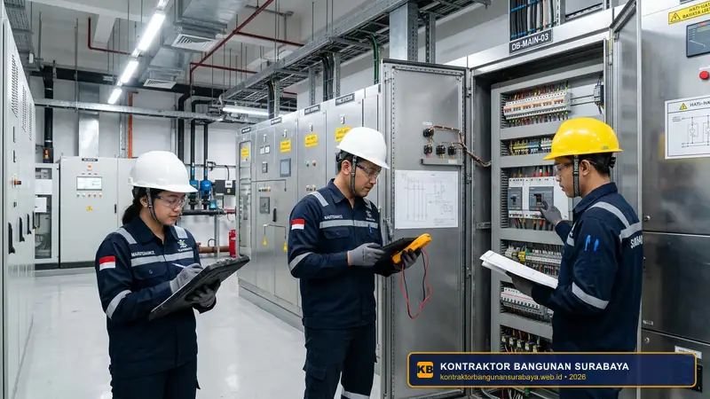

1. Rekomendasi Jasa Maintenance Gedung Bergaransi dan Responsif di Surabaya
Bagaimana rekomendasi jasa maintenance gedung yang bergaransi dan cepat tanggap?
Jasa maintenance gedung yang direkomendasikan adalah yang menawarkan garansi tertulis atas pekerjaan yang dilakukan, memiliki waktu respons cepat untuk penanganan darurat, serta transparan dalam kontrak kerja dan cakupan layanan. kontraktorbangunansurabaya.web.id melayani jasa maintenance gedung dan ruko di Surabaya dengan standar tersebut, membantu pemilik bangunan menjaga aset mereka tetap dalam kondisi optimal.
Memelihara fasilitas bangunan komersial, gedung perkantoran, dan deretan ruko di kawasan metropolitan seperti Surabaya membutuhkan pendekatan yang profesional dan terstruktur. Kerusakan mendadak tidak hanya mengganggu operasional penyewa atau aktivitas bisnis, tetapi juga dapat menurunkan nilai investasi properti jika tidak ditangani dengan prosedur teknis yang tepat dan berstandar baku.
Standar Layanan Pemeliharaan Gedung
Dapatkan layanan perawatan preventif dan perbaikan korektif menyeluruh melalui unit spesialis maintenance bangunan gedung kami di Surabaya.
2. Kriteria Garansi Pekerjaan yang Perlu Dipastikan Sejak Awal
Garansi pekerjaan maintenance sebaiknya mencakup jaminan bahwa masalah yang sama tidak akan muncul kembali dalam periode tertentu setelah penanganan dilakukan, misalnya garansi bebas bocor pasca perbaikan waterproofing, bukan sekadar garansi terhadap kerusakan komponen fisik semata.
Kejelasan mengenai apa yang termasuk dan tidak termasuk dalam cakupan garansi juga perlu dipastikan di awal, agar tidak terjadi perbedaan pemahaman antara pemilik gedung dan penyedia jasa saat mengajukan klaim di kemudian hari.
Masa berlaku garansi yang wajar juga perlu disesuaikan dengan jenis pekerjaan, misalnya garansi waterproofing yang umumnya lebih panjang dibanding garansi perbaikan kosmetik ringan, sehingga ekspektasi pemilik gedung terhadap durasi jaminan tetap realistis.
| Jenis Pekerjaan Maintenance | Cakupan Jaminan Garansi | Standar Durasi Garansi Wajar |
|---|---|---|
| Waterproofing Dak & Talang | Jaminan bebas rembesan dan kebocoran ulang pasca aplikasi membran/coating | 6 – 24 Bulan (sesuai spesifikasi material) |
| Instalasi MEP & Plambing | Jaminan kerapatan sambungan pipa, kestabilan tekanan, dan kelistrikan panel | 3 – 6 Bulan |
| Perbaikan Retak & Fasad Sipil | Jaminan tidak terjadi retak susulan dan ketahanan lapisan pelindung cuaca | 3 – 12 Bulan |
| Pengecatan & Finishing Kosmetik | Jaminan daya rekat cat, bebas pengelupasan awal, dan keseragaman warna | 3 – 6 Bulan |
3. Pentingnya Waktu Respons Cepat untuk Penanganan Darurat
Waktu respons yang dijanjikan untuk kondisi darurat, seperti kebocoran pipa besar atau korsleting listrik, sebaiknya jelas tercantum dalam kontrak kerja, misalnya maksimal beberapa jam sejak laporan diterima, agar pemilik gedung memiliki kepastian dalam menghadapi situasi mendesak.

Ketersediaan jalur komunikasi yang mudah diakses kapan saja, seperti nomor WhatsApp khusus layanan darurat, juga menjadi nilai tambah penting, mengingat kerusakan pada bangunan komersial dapat terjadi kapan saja di luar jam kerja normal.
Situasi Kategori Darurat (Emergency)
- Pipa Induk Pecah: Genangan air berpotensi merusak plafon, server, dan lantai komersial.
- Konsleting Panel Listrik Utama: Risiko kebakaran dan pemadaman operasional gedung.
- Kebocoran Atap Ekstrem: Air hujan deras memasuki area perkantoran atau toko.
- Kerusakan Pompa Booster: Terhentinya pasokan air bersih untuk seluruh tenant.
Standar SLA Respon Tim Kami
- Respon Konfirmasi WA: Tanggapan awal di bawah 15 menit via hotline darurat.
- Mobilisasi Teknisi: Tim tiba di lokasi gedung Surabaya dalam 1 – 2 jam.
- Tindakan Isolasi Cepat: Menghentikan sumber kebocoran / korsleting segera.
- Laporan Investigasi Tertulis: Berita acara perbaikan lengkap dengan dokumentasi foto.
Kejelasan mengenai biaya tambahan untuk penanganan di luar jam kerja normal juga sebaiknya disepakati sejak awal kontrak, agar tidak timbul perselisihan mengenai biaya darurat pada saat penanganan benar-benar dibutuhkan.
4. Layanan Maintenance Transparan dan Terpercaya dari kontraktorbangunansurabaya.web.id
Kontrak kerja yang jelas mengenai cakupan layanan, jadwal kunjungan rutin, dan skema biaya tambahan di luar cakupan kontrak membantu menghindari kesalahpahaman antara pemilik gedung dan penyedia jasa maintenance selama masa kerja sama berlangsung.
kontraktorbangunansurabaya.web.id menawarkan skema kontrak maintenance dengan cakupan yang jelas dan waktu respons yang terukur, sehingga pemilik ruko atau gedung di Surabaya dapat lebih tenang menjalankan usaha tanpa khawatir mengenai kondisi fisik bangunan yang mereka miliki.
Keunggulan Kontrak Maintenance Bersama Kami di Surabaya:
- Jadwal Kunjungan Berkala Terjadwal: Checklist inspeksi fisik bulanan/triwulanan untuk mendeteksi potensi kerusakan sebelum membesar.
- Teknisi Berpengalaman & Bersertifikasi: Penanganan ditangani oleh tenaga ahli teknik sipil dan mekanikal elektrikal profesional.
- Transparansi Rincian Biaya: Format penawaran biaya suku cadang dan jasa perbaikan terbuka tanpa markup tersembunyi.
- Dokumentasi Logbook Digital: Rekam jejak seluruh tindakan servis dan riwayat pergantian komponen tersimpan rapi.
Referensi dari klien lain yang telah menggunakan layanan maintenance dalam jangka panjang juga menjadi cara yang baik untuk menilai konsistensi kualitas dan keandalan penyedia jasa, dibanding hanya menilai dari presentasi penawaran di awal pertemuan.
Untuk memahami cakupan layanan maintenance secara menyeluruh sebelum memilih penyedia jasa, baca kembali panduan mengenai jasa maintenance bangunan gedung yang membahas ruang lingkup perawatan bangunan secara lengkap.
Integrasi Konstruksi & Pemeliharaan Gedung
Selain pemeliharaan berkala, kami juga siap melayani pekerjaan konstruksi gedung komersial dan ruko serta renovasi bangunan komersial berstandar teknis tinggi di Surabaya.
5. FAQ Seputar Rekomendasi Jasa Maintenance Gedung
6. Konsultasi Gratis Sekarang
Ingin berdiskusi lebih lanjut mengenai kebutuhan konstruksi bangunan Anda di Surabaya? Hubungi tim kami melalui WhatsApp di 0889-8964-3555 untuk konsultasi awal tanpa biaya bersama kontraktorbangunansurabaya.web.id.
Konsultasi WhatsApp di 0889-8964-3555Reza Maulana Nehru
Praktisi & Penulis Edukasi Konstruksi Bangunan di Kontraktor Bangunan Surabaya. Berfokus pada manajemen pemeliharaan gedung bertingkat, standar uji kekuatan beton, audit kebocoran struktur, dan efisiensi operasional fasilitas komersial di Surabaya dan sekitarnya.